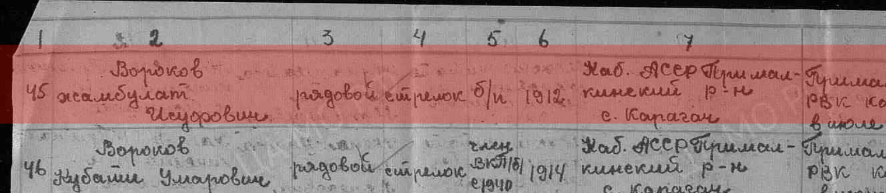
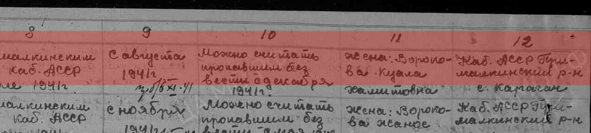
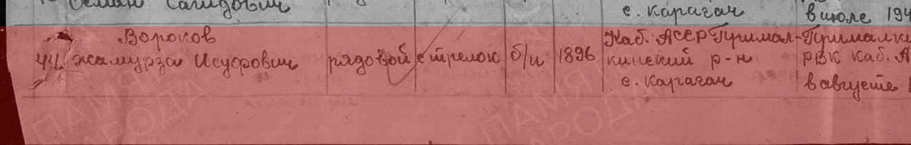
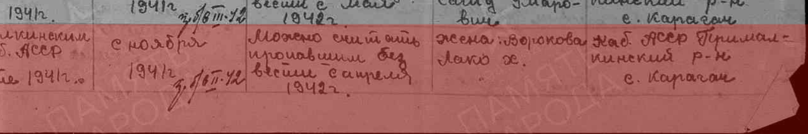
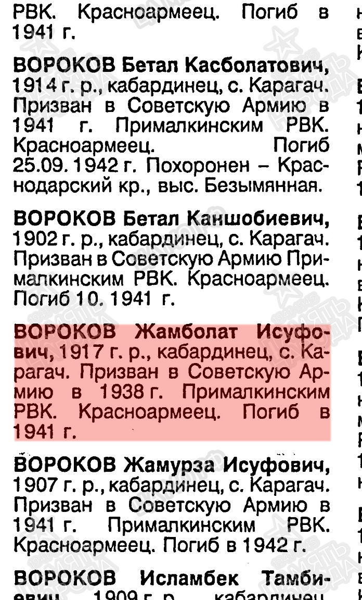

Главное
- Оба брата есть в документах Министерства обороны. В 1947 г. Прималкинский райвоенкомат включил их в список пропавших без вести. Они записаны подряд, под номерами 44 и 45, оба из села Карагач [1]. Ещё одна запись есть в Книге памяти Кабардино-Балкарии [3]. подтверждено
- Жамболет пропал без вести в 1941 г. Последние письма от него пришли в августе 1941 г. По Книге памяти его призвали в 1938 г. Это сходится с рассказом семьи о службе до войны и о Финской войне. подтверждено (год)
- Жамболет — политрук? В документах он записан рядовым («красноармеец»). Но список 1947 г. составлялся со слов родственников, и звание в таких списках часто писали по умолчанию. Вопрос остаётся открытым. есть противоречия
- Жамырза пропал без вести в 1942 г. Его призвали в августе 1941 г., письма перестали приходить с ноября 1941 г. подтверждено (год)
- Где погиб и где похоронен Жамырза — пока не установлено. Ни в одном найденном документе не указаны его воинская часть или место гибели. Главный ключ к ответу — номер полевой почты на его последних письмах. не установлено
Что это за документы
Список 1947 года. 22 октября 1947 г. Прималкинский райвоенкомат Кабардинской АССР отправил в Москву, в Управление по учёту погибшего и пропавшего без вести рядового и сержантского состава, «именной список по форме 2БП для выяснения судьбы военнослужащих» на 7 листах [2]. Такие списки составляли после войны, обычно по обращениям семей, которые так и не получили известий. В список вносили, когда и каким военкоматом человек призван, когда пришло последнее письмо и кто из родственников его ищет. Номер части там обычно не указан. Поэтому список подтверждает, что человек ушёл на фронт и пропал, но не говорит, где именно.
Книга памяти Кабардино-Балкарии, книга 3, с. 53 [3]. Это сводное издание 1990-х годов. Откуда составители взяли сведения, в книге не сказано. Годы рождения и год призыва Жамболета там другие, чем в списке 1947 г. Значит, книга не перепечатала этот список, а опиралась на другие данные. Однако «погиб» в Книгах памяти нередко пишут и о пропавших без вести.
Жамболет Исуфович Вороков
В документах его имя записано как Жамбулат (список 1947 г.) и Жамболат (Книга памяти). Семья называет его Жамболет. Это варианты одного кабардинского имени. Других Вороковых с отчеством «Исуфович» в базе нет.
| Что | Список РВК, 1947 [1] | Книга памяти КБР [3] | Семья |
|---|---|---|---|
| Место рождения | Каб. АССР, Прималкинский р-н, с. Карагач | с. Карагач, кабардинец | с. Карагач подтверждено |
| Год рождения | 1912 | 1917 | — есть противоречия |
| Призыв | Прималкинским РВК в июле 1941 г. | Прималкинским РВК в 1938 г. | служил до войны, Финская война есть противоречия |
| Звание, должность | рядовой, стрелок, беспартийный | красноармеец | политрук есть противоречия |
| Последнее письмо | с августа 1941 г. нет писем | — | — |
| Судьба | «можно считать пропавшим без вести с декабря 1941 г.» | погиб в 1941 г. | — подтверждено (1941) |
| Семья в 1947 г. | жена: Ворокова Куала [чтение неуверенное; отчество, возможно, Жамитовна], с. Карагач | — | — по документу |
Политрук, Рыбинская школа и Финская война
Семья помнит, что Жамболет окончил «Рыбинскую политшколу» в Ярославской области, стал политруком и ушёл на советско-финляндскую войну (1939–1940). Документально это пока не подтверждено, но и не опровергнуто: по сведениям семьи
- За эту версию говорит Книга памяти: призыв в 1938 г. Человек, призванный в 1938 г., в 1939 г. вполне мог учиться на курсах политработников и воевать в Финляндии.
- Против неё — слово «рядовой» в списке 1947 г. Но этот список составлен по сведениям родственников и военкомата. Тот же бланк с записью «рядовой, стрелок» заполнен почти для всех односельчан на этих листах. Поэтому против версии о политруке это слабый довод.
- Он не значится среди погибших в Финской войне (база «Зимняя война» Петрозаводского университета). Это согласуется с семейным рассказом: с той войны он вернулся и пропал уже в 1941 г.
- Что такое «Рыбинская политшкола», пока не ясно. Поиск не нашёл учебного заведения с таким названием в 1938–1939 гг. Возможно, это были курсы младших политруков при части, стоявшей в Рыбинске. Проверить это можно по документам РГВА.
Если он был младшим политруком, на него должна быть офицерская учётная карточка. Её стоит искать на «Памяти народа» и в ЦАМО (см. «Что можно сделать дальше»). вероятно


Жамырза Исуфович Вороков
В документах — Жамурза. Это тот же человек: совпадают отчество, село и военкомат, и в списке он записан строкой выше брата.
| Что | Список РВК, 1947 [1] | Книга памяти КБР [3] |
|---|---|---|
| Место рождения | Каб. АССР, Прималкинский р-н, с. Карагач | с. Карагач, кабардинец подтверждено |
| Год рождения | 1896 | 1907 есть противоречия |
| Призыв | Прималкинским РВК Каб. АССР в августе 1941 г. | Прималкинским РВК в 1941 г. подтверждено |
| Звание, должность | рядовой, стрелок, беспартийный | красноармеец подтверждено |
| Последнее письмо | с ноября 1941 г. нет писем | — |
| Судьба | «можно считать пропавшим без вести с апреля 1942 г.» | погиб в 1942 г. подтверждено (1942) |
| Семья в 1947 г. | жена: Ворокова Лако Х., с. Карагач | — по документу |
Где погиб и где похоронен
Пока не установлено. не установлено Ниже — что известно и почему этого недостаточно.
- Он ушёл из Карагача в августе 1941 г., последние письма пришли осенью 1941 г., после ноября связь оборвалась. Весной 1942 г. он числился пропавшим без вести.
- В ОБД «Мемориал» нет ни донесения его части о потерях, ни списка захоронения, ни карточки военнопленного. Есть только послевоенный список военкомата. Так бывает, когда человек пропал в окружении, при отступлении или погиб в части, документы которой не сохранились.
- Без номера части нельзя назвать ни место гибели, ни место захоронения. Догадки по общей обстановке на фронтах 1941–1942 гг. здесь не помогут.
- Главная зацепка — номер полевой почты на его последних письмах (треугольниках) или на конвертах. По номеру полевой почты устанавливается часть, а по журналу боевых действий части — где она была в ноябре 1941 – апреле 1942 г. и где хоронили погибших.



Как они связаны
| Связь | Чем подтверждается | Надёжность |
|---|---|---|
| Жамболет ↔ Жамырза — братья | Это прямо утверждает семья. Документы с этим согласуются: одно отчество, одно село, один военкомат, соседние строки одного списка, соседние статьи Книги памяти. Но слово «брат» в них не написано. [1] [3] | по сведениям семьи |
| Халимат ↔ Жамболет и Жамырза — сестра и братья | Только семейная память; документов о Халимат в деле пока нет. | по сведениям семьи |
| Исуф → Жамболет и Жамырза — отец | Выведено только из отчества «Исуфович». Отчество не доказывает, кто был отцом. | вероятно |
| Жамболет ↔ Куала; Жамырза ↔ Лако | В графе «ближайшие родственники» списка 1947 г. обе названы «жена». Это не запись о браке. Имя «Куала» прочитано неуверенно. [1] | по документу |
В Книге памяти на той же странице записаны и другие Вороковы из Карагача: Бетал Касболатович (1914, погиб 25.09.1942, похоронен в Краснодарском крае, высота Безымянная), Бетал Каншобиевич (1902), Исламбек Тамбиевич (1909), Кубати Умарович (1914), Нахо Камбулатович (1912), Магомет Шубакович (1909, погиб 25.01.1943, Ленинградская обл., п. Синявино). Возможно, это родня, но родство с братьями не проверялось.
Хронология
| Когда | Что и где | Надёжность |
|---|---|---|
| 1896 или 1907 | Родился Жамырза, с. Карагач | есть противоречия |
| 1912 или 1917 | Родился Жамболет, с. Карагач | есть противоречия |
| 1938 | Жамболет призван Прималкинским РВК (по Книге памяти) | по документу |
| 1938–1939 | Жамболет учится в «Рыбинской политшколе», Ярославская обл. | по сведениям семьи |
| 1939–1940 | Жамболет — участник советско-финляндской войны | по сведениям семьи |
| июль 1941 | Жамболет призван (или повторно отправлен) Прималкинским РВК (по списку 1947 г.) | по документу |
| август 1941 | Последние письма от Жамболета; Жамырза призван Прималкинским РВК | по документу |
| ноябрь 1941 | Последние письма от Жамырзы | по документу |
| 1941 (дек.) | Жамболет считается пропавшим без вести | подтверждено (год) |
| 1942 (апр.) | Жамырза считается пропавшим без вести | подтверждено (год) |
| 22.10.1947 | Прималкинский райвоенкомат подаёт список для выяснения их судьбы; жёны живут в Карагаче | по документу |
Места
| Как в документе | Принадлежность на дату события | Сейчас |
|---|---|---|
| Каб. АССР, Прималкинский р-н, с. Карагач | Кабардино-Балкарская АССР, Прималкинский район (1941–1947; в 1944–1957 республика называлась Кабардинской АССР) | с. Карагач, Прохладненский район, Кабардино-Балкарская Республика |
| Прималкинский РВК | районный военкомат, призывавший жителей Карагача | учёт ведёт военкомат по Прохладненскому району КБР |
Нестыковки в документах
- Годы рождения. Список 1947 г.: Жамырза — 1896, Жамболет — 1912. Книга памяти: 1907 и 1917. Различить версии помогут похозяйственные книги сельсовета Карагач или другие документы о самих братьях.
- Когда призван Жамболет. Список 1947 г.: июль 1941 г.; Книга памяти: 1938 г. Обе версии могут быть верны, если он служил с 1938 г., а в 1941 г. его учёт снова прошёл через военкомат. Ответ даст учётно-послужная карточка.
- Звание Жамболета. Семья помнит политрука; документы называют рядовым. Подробнее — в разделе о Жамболете.
- Месяц пропажи. В карточках ОБД «Мемориал» указано: Жамболет — 11.1941, Жамырза — 02.1942. На самом скане (графа 10) написано «с декабря 1941 г.» и «с апреля 1942 г.». Даты в карточках, по-видимому, взяты из неразборчивой пометы в графе 9 (похоже на «з/б 6.XI.41» и «з/б 6.II.42»). Здесь вернее текст документа.
Где искали и не нашли
| Где | Что искали | Почему это ещё не ответ |
|---|---|---|
| ОБД «Мемориал» | Все 170 записей с фамилией Вороков; варианты имени (Жамбулат, Жамболет, Жамбот, Джамбулат, Жамурза) и отчества (Юсуфович, Юсупович); все 347 «Исуфовичей» — нет ли искажённой фамилии; Книги памяти | Кроме описанных записей, ничего нет. В базе нет донесений части, списков захоронения и документов о плене. Часть таких документов есть только на «Памяти народа» |
| «Зимняя война» (winterwar.karelia.ru) | Фамилии Вороков, Ворок…, Варок…, Ворох… | Это база только погибших и пропавших в 1939–1940 гг. Тех, кто вернулся, в ней нет |
| «Бессмертный полк» (moypolk.ru) | Вороков; Вороков Жамбулат / Жамболат / Жамурза; Ворокова Халимат | Страниц братьев нет. Если семья создаст такую страницу, её смогут найти другие родственники |
| «Память народа», «Подвиг народа» | — | Не проверено: сайт требует пройти CAPTCHA (см. ниже) |
| «Дорога памяти» (1418museum.ru) | Вороков Исуфович | Поиск не выдал результатов в автоматическом режиме; стоит повторить вручную |
| Общий поиск в интернете | ФИО, «Рыбинская политшкола» | Ничего по теме |
Что можно сделать дальше
Сделать вам (пройти CAPTCHA)
- «Память народа»: откройте поиск «Вороков … Исуфович» и пройдите проверку. Пришлите мне список найденного или снимки экрана, особенно записи из учётно-послужной картотеки офицеров, документов о военнопленных и списков военно-пересыльных пунктов. Отдельно проверьте имя без отчества: Вороков Жамбулат, Вороков Жамболат.
- «Подвиг народа» (тот же портал): награды Жамболета за 1939–1941 гг., например медаль «За отвагу» или «За боевые заслуги» за Финскую войну.
В семье
- Письма с фронта, треугольники, конверты: номер полевой почты — главный ключ к месту гибели.
- Извещения, справки военкомата из 1940-х годов, ответы на запросы о розыске.
- Фотографии: если Жамболет снят в форме, по петлицам и нарукавной звезде можно понять, был ли он политработником.
- Дети братьев и их жёны (Куала, Лако): у их потомков могли остаться документы.
- Кто в семье рассказывал о Рыбинской школе и Финской войне и откуда это известно.
Запросить в архивах
- ЦАМО РФ (Подольск): учётно-послужная карточка или личное дело Ворокова Жамбулата (Жамболата) Исуфовича, 1912/1917 г.р., уроженца с. Карагач, призванного Прималкинским РВК в 1938 г., если он служил в политсоставе; сведения о Вороковом Жамурзе Исуфовиче. Указать известный шифр: ф. 58, оп. 977520, д. 916.
- РГВА (Москва): документы о курсах или школе политруков в Рыбинске 1938–1939 гг., списки выпускников; участие в советско-финляндской войне.
- Военный комиссариат КБР (по Прохладненскому району): учётные карточки призыва 1938 и 1941 гг.
- Архивная служба КБР: похозяйственные книги сельсовета Карагач за 1930–1940-е гг. В них есть состав семьи (Исуф, его дети, в том числе Халимат) и годы рождения.
Источники
- Именной список безвозвратных потерь по форме 2БП по Прималкинскому райвоенкомату Кабардинской АССР, строки 44 (Вороков Жамурза Исуфович) и 45 (Вороков Жамбулат Исуфович). ЦАМО РФ, ф. 58, оп. 977520, д. 916; донесение № 75414, дата поступления 29.10.1947. Карточки ОБД «Мемориал»: ID 64914710, ID 64914711.
- Сопроводительное письмо Прималкинского райвоенкомата КАССР № 0512 от 22.10.1947 к тому же списку. ЦАМО РФ, ф. 58, оп. 977520, д. 916. ОБД «Мемориал», ID 64914651.
- Книга памяти. Кабардино-Балкарская республика. Книга 3, с. 53. ОБД «Мемориал», ID 404143330 (Жамболат), ID 404143331 (Жамурза).
- Сведения семьи, переданные внуком/внучкой Халимат Вороковой, 31.10.2026.
Выводы о звании и службе Жамболета могут измениться, если найдутся его учётно-послужная карточка, наградные документы или письма. Место гибели Жамырзы можно будет установить, если станет известна его часть. Сведения о ныне живущих людях не собирались. Рабочие реестры дела лежат рядом с отчётом: artifact-register.csv, claims-register.csv, search-log.csv.